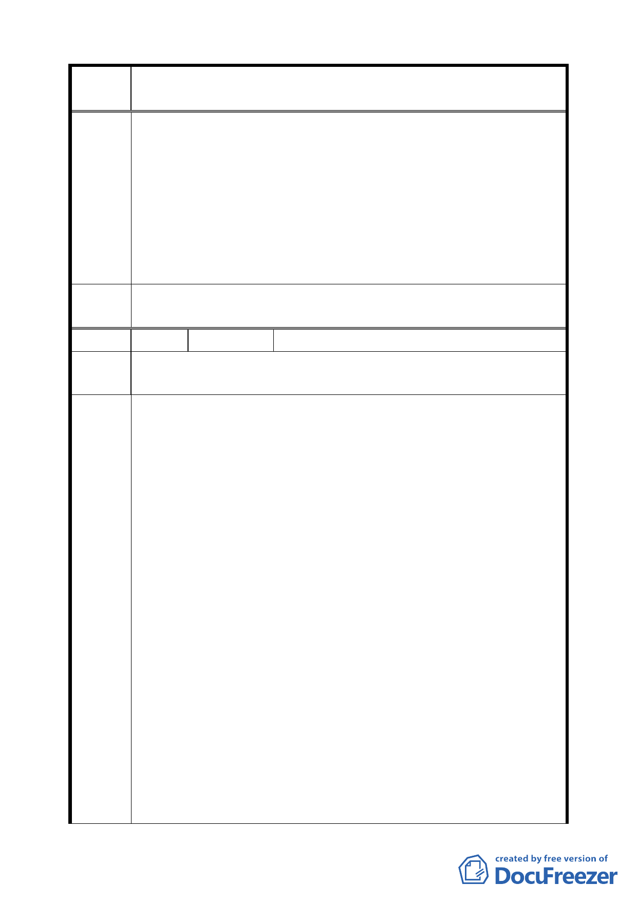

變更臺北市信義區信義段三小段五三之三四地號人行步道用地為
案 名 道路用地計畫案
審議過程，並表達相關意見，盼獲充份溝通達成共識，以維護地
主權益及公眾利益，使本案圓滿解決。
2.主張維持原方案道路規劃（單向暢通），並希就退縮深度及補償
部份與相關單位再行商議，研擬妥善的實施細節，或道路向北微
移，避免基地退縮，或提供合理專案補償，保障地主權益。
3.各替代方案（含補提之建議方案），阻斷道路貫通、形成死巷設
計，嚴重違反地主權益及公共利益，難獲地主支持，切勿貿然實
施。
委員會
決議
同編號 1。
編號
8 陳情人
賴快華
陳 情 理 市府的原計畫案及替代方案一、二、三、四均不可行，乃提出此
由 方案。
規劃前提：因環球水泥基地已蓋到地面四層，市府的原計畫案及
替代方案一、二、三、四均不可行
替代方案五
1.將北邊六塊基地線以北至公園圍籬、博愛國小、興雅國中圍牆基
地線以南之間，南北總共約 9.5 米寬(含現有 4 米人行步道、南
北側各約 0.6 米排水溝、校園圍牆南側約 4.3 米人行步道)；從松
勇路右側起，向東至信義路五段 91 巷口，東西總共約 200 米長
之基地，一併整體考量規劃。
2.上述基地位於領世館﹝松仁路無名巷與松勇路口之既成大樓﹞
建 議 辦 北側部分維持現狀或略作綠美化。東西兩端設置路障或樹籬，禁
法 止車輛東西向穿越。
3.上述基地自領世館基地東界起，迄信義路五段 91 巷西界部份則
規劃如下：
（1）公園圍籬、國小、國中南側現有 4.3 米人行步道退縮成 2.5
米人行步道。
（2）住宅區基地北側保留 2.0 米人行步道。
（3）中間則變更為 5 米道路用地﹝含南北兩側各 0.6 米隱藏式排
水溝﹞，闢設雙向車行道路，供住宅區基地車輛進出。並於
5 米道路與信義路五段 91 巷口設置 Τ 路標，禁止外車進入。
優點
9